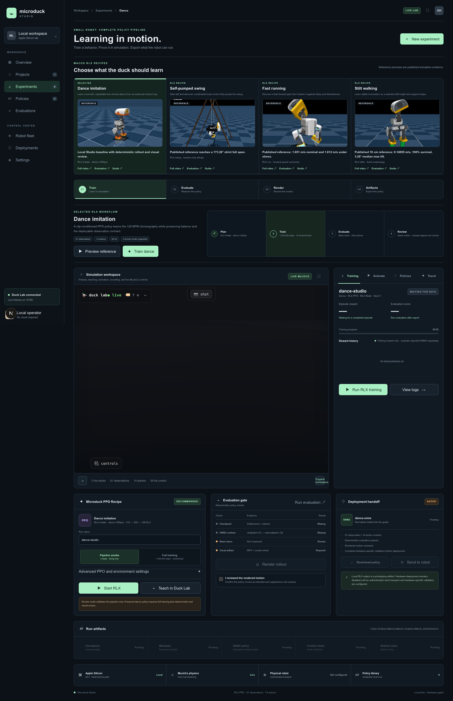
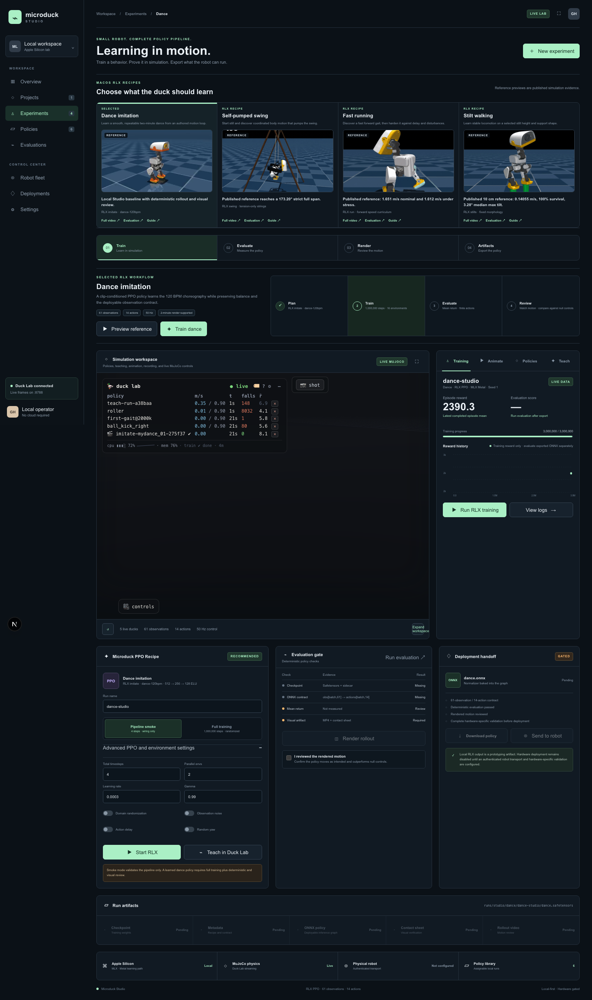
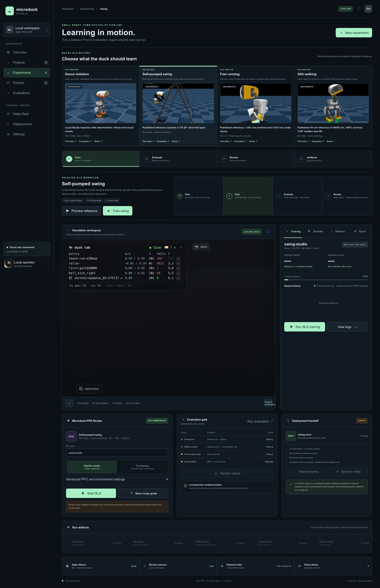
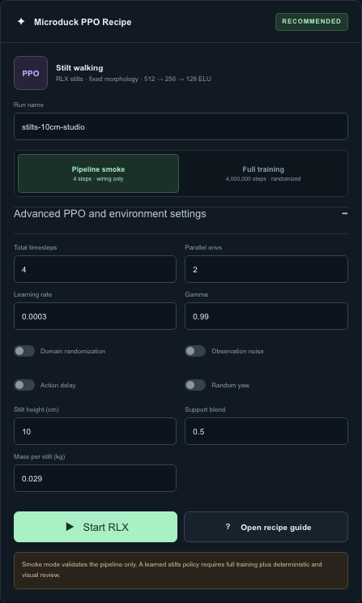

Train, evaluate, render, and export four macOS RLX recipes
2026-09-06
Microduck Studio provides one local workflow for four reinforcement-learning experiments:
All four Studio recipes run locally on macOS through RLX PPO. MuJoCo performs the simulation on the CPU, and RLX performs PPO updates with MLX on Apple Silicon. This Studio path does not require CUDA.
Open the Studio at:
http://127.0.0.1:63317Start the workspace from the repository root:
cd /Volumes/ExternalSSD/geoagent/microduck-lab
./restart-lab.shThe launcher starts:
| Service | Address | Purpose |
|---|---|---|
| Microduck Studio | http://127.0.0.1:63317 |
Experiment selection, RLX jobs, evaluation, rendering, and artifacts |
| Duck Lab | http://127.0.0.1:8788 |
Live MuJoCo scene, policy playback, animation, and Teach workflows |
| Live stream | ws://127.0.0.1:8788/ws |
Poses, simulation statistics, and Duck Lab training progress |
Wait for the Studio connection indicator before relying on the
embedded simulation, Animate,
Policies, or Teach. The four RLX
recipe jobs run through the Studio's local /api/rlx
service.
Simulation boundary: Studio output is local prototyping evidence. It is not proof that a policy is safe for a physical robot. Hardware work requires a separate compatibility, controlled-testing, and safety process. All four workflows in this guide use RLX on macOS.
The experiment catalog contains published preview media and published evaluation records. Those assets are labeled REFERENCE in the Studio. They do not update when you train a new policy.
Your own run produces a separate checkpoint, metadata sidecar, ONNX
policy, evaluation record, MP4, and contact sheet under
rlx/runs/studio/. Treat these as LATEST
RUN evidence.
| Label | What it means | What it does not mean |
|---|---|---|
| REFERENCE | Bundled media or JSON produced by a previously published experiment | Your current settings reproduced the result |
| LATEST RUN | Artifacts and measurements from the run name currently selected in Studio | The result matches the reference or is hardware-ready |
| Pipeline smoke | The command path, environment, checkpoint, export, and evaluator can execute | PPO learned the requested behavior |
| Full training | The recipe used its normal Studio budget and randomized settings | The resulting motion is good without evaluation and visual review |
Never copy a reference number into the record for a newly trained
run. Record only values found in that run's own
evaluation.json and rendered output.

Figure 1. Select one recipe at a time. Preview and evaluation links in the catalog show published reference evidence, not the latest local run.
Every Studio recipe preserves the same policy interface:
observations[batch, 61] -> deterministic actor -> actions[batch, 14]The control loop runs at 50 Hz. The actor and critic each use a
512 -> 256 -> 128 ELU multilayer perceptron. Training
saves an MLX actor-critic checkpoint plus observation-normalization
statistics. ONNX export bakes that normalizer into the deterministic
actor graph.
The shared workflow is:
choose recipe
-> configure a named run
-> run pipeline smoke
-> run full training
-> inspect reward history
-> evaluate deterministically
-> render MP4 and contact sheet
-> review motion
-> download artifacts
-> change one cause and repeatThe Studio exposes the same four lifecycle stages for each experiment:
| Stage | Required result |
|---|---|
| Train | Safetensors checkpoint, metadata sidecar, and normally an ONNX export |
| Evaluate | Deterministic rollout JSON with finite observations, rewards, and actions |
| Render | One MP4 and one diagnostic contact sheet |
| Artifacts | Downloadable files tied to the selected experiment and run name |
The documented Studio path expects:
uv;/usr/local/bin/python3.12, unless
MICRODUCK_STUDIO_PYTHON points to another compatible
interpreter;rlx/ and microduck_local/
checkouts in this workspace;microduck_local;No CUDA installation, CUDA device, or remote training service is used by this workflow.
From the workspace root:
cd /Volumes/ExternalSSD/geoagent/microduck-lab
cd microduck_local && uv sync
cd ../duck-viewer && npm install
cd ..If the Microduck model checkout is not at its default location, set:
export MICRODUCK_RL_DIR=/absolute/path/to/microduck_rlThe normal launcher handles the Duck Lab and Studio processes:
./restart-lab.shThe Studio invokes rlx/examples/ppo_microduck_studio.py
in an isolated Python 3.12 overlay. For command-line diagnosis, define
the same type of helper from the rlx/ directory:
cd /Volumes/ExternalSSD/geoagent/microduck-lab/rlx
studio_uv() {
env -u VIRTUAL_ENV UV_PYTHON_PREFERENCE=only-system \
uv run --isolated --no-project \
--python /usr/local/bin/python3.12 \
--with-editable . \
--with-editable ../microduck_local "$@"
}Confirm the four commands and four recipes:
studio_uv examples/ppo_microduck_studio.py --help
studio_uv examples/ppo_microduck_studio.py train --helpThe command groups are train, eval,
render, and export. The accepted recipes are
dance, running, stilts, and
swing.
Selecting another experiment resets the recipe form to that experiment's defaults and clears the local visual-review checkbox.
| Control | Smoke default | Full default | Accepted range or behavior |
|---|---|---|---|
| Run name | Recipe default | Recipe default | Letters, numbers, _, and -; sanitized to
lowercase; maximum 48 characters |
| Total timesteps | 4 | Recipe-specific | 4 to 40,000,000 in the UI; server rounds up to a full rollout batch |
| Parallel envs | 2 | 16 | 1 to 64 |
| Seed | 1 | 1 | Positive integer, maximum 2,147,483,647 |
| Learning rate | 0.0003 | 0.0003 | 0.000001 to 0.1 |
| Gamma | 0.99 | 0.99 | 0.8 to 1.0 |
| Domain randomization | Off | On | Disabled automatically in smoke mode |
| Observation noise | Off | On | Disabled automatically in smoke mode |
| Action delay | Off | On | Disabled automatically in smoke mode |
| Random yaw | Off | On | Disabled automatically in smoke mode; the swing environment forces it off |
The Studio fixes additional PPO values:
| PPO setting | Pipeline smoke | Full training |
|---|---|---|
| Rollout steps per environment | 2 | 24 |
| Minibatches | 1 | 4 |
| Update epochs | 1 | 5 |
| GAE lambda | 0.95 | 0.95 |
| PPO clip coefficient | 0.2 | 0.2 |
| Entropy coefficient | 0.01 | 0.01 |
| Value coefficient | 1.0 | 1.0 |
| Maximum gradient norm | 0.5 | 0.5 |
| Advantage normalization | On | On |
| Clipped value loss | On | On |
The server rounds totalTimesteps to a multiple of:
parallel environments * rollout stepsFor example, full training with 16 environments and 24 rollout steps advances in batches of 384 transitions.
| Recipe | Default run name | Studio full budget | Environments | Catalog evaluation metric |
|---|---|---|---|---|
| Dance imitation | dance-studio |
1,000,000 | 16 | Mean return |
| Self-pumped swing | swing-studio |
4,000,000 | 16 | Peak-to-peak span |
| Fast running | running-studio |
4,000,000 | 16 | Forward speed |
| Stilt walking | stilts-10cm-studio |
4,000,000 | 16 | Forward speed |
The recipe registry uses natural full-training horizons of 4 seconds for dance, 24 seconds for swing, 12 seconds for running, and 10 seconds for stilts. Smoke mode uses one-second episodes only to verify wiring.
Dance rendering is separate from its training horizon: the Studio asks the renderer for a 120-second show and loops the learned four-second motif. Swing, running, and stilts render their natural recipe horizon by default.
This distinction matters most for swing, whose published reference evaluation used 36-second rollouts, and for running and stilts, whose published evaluations used 10-second rollouts. Match evaluation duration and morphology before comparing directly with those published values.
Use smoke mode to prove:
Smoke mode uses two environments, two rollout steps, one minibatch, one update epoch, and four total transitions. It disables all four randomization toggles.
A four-transition policy has not learned to dance, pump a swing, run, or walk on stilts. Label its output SMOKE, not TRAINED.
Full training uses 16 environments, 24 rollout steps, four minibatches, five update epochs, and the recipe budget shown in the catalog. Randomization, observation noise, action delay, and random yaw are enabled by default.
Select Full training and then Start RLX or Run RLX training. The experiment coach's Train dance, Train swing, Train running, or Train stilts button also switches to the full recommended settings before starting.
Training completion proves that PPO finished and artifacts were written. It does not prove that the behavior is useful.

Figure 2. Reward history describes training. Deterministic evaluation and render review provide separate evidence after the checkpoint exists.
The chart plots mean completed-episode reward reported by the active RLX job. It can remain empty until at least one episode finishes. With a four-second episode at 50 Hz, an environment needs roughly 200 control steps to complete an episode unless it terminates early.
Use reward history to answer:
Do not use reward history to answer:
The chart updates after every PPO rollout, so long dance, swing, running, and stilt episodes do not have to finish before reward history appears. Completed episodes can add additional points. The chart stores at most 240 points in the current Studio process. Starting a new training operation clears the active RLX chart for that run. Keep the metadata, evaluation JSON, and rendered files as the durable evidence.
The dance recipe always selects the imitate behavior and
the packaged dance-120bpm clip. The clip is a one-second,
five-keyframe loop at 120 BPM. PPO must match the authored joint pose
and body rotation while preserving balance, usable contact, and
motion.
The recipe's numerical task metric is:
pose_rmse_radLower pose root-mean-square error is better, but the current Studio evaluation card uses mean return as its top-level dance score. Visual review remains required.
| Term | Weight | Purpose |
|---|---|---|
pose_match |
4.0 | Match the reference joint pose at the current phase |
rotation_match |
4.0 | Match reference body-rotation timing |
stick_it |
5.0 | End a one-shot clip standing on both feet |
on_feet |
5.0 | Stay upright at standing height with foot contact for looping clips |
no_slip |
0.5 penalty | Prevent planted feet from skating |
no_spin |
0.3 penalty | Prevent unwanted yaw |
travel |
3.0 | Reward forward movement for looping gait-like clips |
gentle_head |
1.0 penalty | Penalize head-floor impacts |
soft_landings |
0.75 penalty | Penalize hard landings |
no_limit_parking |
1.0 penalty | Penalize joints parked at limits |
save_energy |
0.5 penalty | Penalize unnecessary motor effort |
The Studio's RLX recipe form does not expose reward-weight sliders.
The CLI supports --weight-overrides for controlled
experiments, but beginners should first establish a valid baseline with
the defaults.
Use:
| Control | Recommended first full value |
|---|---|
| Run name | A unique name such as
dance-baseline-01 |
| Total timesteps | 1,000,000 |
| Parallel envs | 16 |
| Seed | 1 |
| Learning rate | 0.0003 |
| Gamma | 0.99 |
| All four randomization toggles | On |
Select Preview reference to open Animate and play the packaged clip. This is choreography playback, not a trained policy.
To train a custom authored clip, use Animate ->
train this and the Duck Lab Teach path. The four-recipe
RLX Studio command remains fixed to dance-120bpm.
The bundled catalog includes a reference preview, but its bundled
evaluation.json is a pipeline-smoke record:
| Published field | Bundled value |
|---|---|
| Evaluation environments | 2 |
| Evaluation steps | 4 |
| Total transitions | 8 |
| Completed episodes | 0 |
| Mean rollout return | 46.30493378639221 |
| Finite | true |
| Passed | true |
This record proves finite smoke execution only. It is not a published full-training dance-quality benchmark and must not be used as the expected score for a new dance run.
Do not train one unique 120-second target and assume PPO learned the whole performance. The practical strategy is to train a short, clean motif and repeat it.
A four-second loop repeated 30 times produces a two-minute performance:
4 seconds * 30 repetitions = 120 secondsFor more variety, design several two-to-four-second motifs:
| Section | Performance time | Motif | Repetitions |
|---|---|---|---|
| Intro | 8 s | 2 s | 4 |
| Groove A | 24 s | 4 s | 6 |
| Groove B | 24 s | 4 s | 6 |
| Turn or crouch | 16 s | 4 s | 4 |
| Groove A return | 24 s | 4 s | 6 |
| Finale | 24 s | 4 s | 6 |
| Total | 120 s |
Train and approve each motif separately. The current Studio does not provide a playlist that switches learned policies automatically on musical boundaries. A single approved loop can be shown for two minutes today; a multi-policy show requires separate orchestration.
| Rendered symptom | First change to investigate |
|---|---|
| Pose matches while the duck lies down | Increase physical plausibility of the clip; inspect
on_feet behavior |
| Feet slide through the cycle | Reduce abrupt keyframe travel; test a cautious no_slip
increase |
| Duck turns instead of dancing in place | Inspect no_spin and asymmetric authored poses |
| Duck barely moves | Confirm visible pose differences and pose-phase coverage |
| Loop jumps at its boundary | Make the final pose closely match the first pose |
| Late choreography never appears | Shorten or segment the clip; current episodes do not cover a unique two-minute sequence |
The swing recipe starts the robot seated and motionless in a retained swing. The policy must discover coordinated body movement that increases the swing arc in both directions without violating the mechanism geometry.
The environment uses:

Figure 3. Swing quality depends on arc growth and mechanism validity. Review the geometry metrics and the full motion, not reward alone.
The largest positive term rewards new positive and negative peak progress. Additional terms reward height, late-episode height, and swing energy. Penalties cover:
The strict published gates are:
| Gate | Failure condition |
|---|---|
| Deep slack | String length below 0.370 m |
| Overextension | String length above 0.394 m |
| Lateral motion | Absolute lateral offset above 0.020 m |
| Attachment alignment | Alignment penalty above 0.050 |
The local recipe marks geometry invalid after two consecutive invalid steps. Once invalid, peak, height, and energy rewards are suppressed for that episode.
Use:
| Control | Recommended first full value |
|---|---|
| Run name | swing-baseline-01 |
| Total timesteps | 4,000,000 |
| Parallel envs | 16 |
| Seed | 1 |
| Learning rate | 0.0003 |
| Gamma | 0.99 |
| Domain randomization | On |
| Observation noise | On |
| Action delay | On |
| Random yaw | On in the form, but forced off by the swing environment |
The Studio uses the recipe's 24-second training horizon. To compare with the published strict result, run a separate 36-second deterministic evaluation with matching geometry gates.
The bundled swing media and JSON report:
| Published metric | Reference value |
|---|---|
| Evaluation seeds | 100 |
| Duration per seed | 36.0 s |
| Strict full-horizon passes | 71 |
| Geometry-debt-free passes | 73 |
| Median peak-to-peak span | 163.0279718838097 degrees |
| Median final-six-half-cycle span | 161.08761759344662 degrees |
| Best strict seed | 27 |
| Best strict peak-to-peak span | 173.19988233166998 degrees |
| Best strict final-six-half-cycle span | 171.67248924707994 degrees |
| Best strict maximum lateral offset | 0.010354727506637573 m |
| Cord-overextension seeds | 3 |
| Deep-slack seeds | 15 |
These are published reference results for the bundled media. They are
not metrics from a newly started swing-studio run.
The local evaluator records instantaneous recipe metrics under:
recipe_metrics.swing_angle_deg
recipe_metrics.swing_abs_angle_deg
recipe_metrics.swing_rate_rad_s
recipe_metrics.lateral_offset_m
recipe_metrics.string_slack_m
recipe_metrics.string_imbalance_m
recipe_metrics.alignment_penalty
recipe_metrics.valid_geometryThe Studio computes the headline peak-to-peak span from the minimum
and maximum of recipe_metrics.swing_angle_deg. Inspect the
saved evaluation JSON for the underlying range and the other geometry
checks.
Change one cause at a time:
| Symptom | First investigation |
|---|---|
| Arc grows in only one direction | Check bidirectional peak progress and asymmetry in the motion |
| Large sideways motion | Lateral penalties and swing alignment |
| Reward rises, strings go slack | Slack, imbalance, and invalid-geometry metrics |
| Good early pump, weak later motion | Four-second Studio horizon; reproduce with a longer CLI horizon |
| Violent joint movement | Action-rate, torque, and limit penalties |
The running recipe uses the local run behavior. It is a
CPU-MuJoCo port of the running task rather than a retuned walking
reward. The curriculum raises the commanded speed over training and
includes some walking and standing commands so the policy also sees
lower-speed and idle states.
The evaluator reports:
recipe_metrics.forward_speed_m_s
recipe_metrics.uprightThe reward emphasizes:
| Term | Weight or schedule | Purpose |
|---|---|---|
keep_pace |
4.0 | Match commanded body-frame speed |
track_turn |
2.0 | Match commanded yaw rate |
air_time |
3.0 | Maintain running-length foot flight |
stay_upright |
2.0 | Remain upright while allowing useful lean |
pose |
1.0 | Use a speed-appropriate leg posture |
head_up |
3.5 | Track the head command and avoid head-first acceleration |
foot_clearance |
2.0 penalty | Keep a moving foot near the 3 cm clearance target |
plant_the_foot |
0.1 penalty | Reduce planted-foot slip |
smooth_moves |
Ramps from 0.1 to 0.5 internally | Reduce action-rate jerk after the gait starts forming |
no_limit_parking |
1.0 penalty | Avoid joint-limit parking |
calm_roll |
0.025 penalty | Reduce excessive trunk roll and pitch rate |
The local behavior's own default budget is 20,000,000 steps. The Studio's recommended full profile currently starts at 4,000,000 steps. Treat that as an initial candidate budget, not a promise that the published fast gait will be reproduced.
Use:
| Control | Recommended first full value |
|---|---|
| Run name | running-baseline-01 |
| Total timesteps | 4,000,000 |
| Parallel envs | 16 |
| Seed | 1 |
| Learning rate | 0.0003 |
| Gamma | 0.99 |
| All four randomization toggles | On |
The Studio uses the recipe's natural 12-second training horizon. Use multiple evaluation episodes and seeds before comparing sustained speed or survival with the published 10-second evidence.
The bundled running reference is comparison media from the published experiment, not a measured outcome of the macOS RLX Studio recipe. Reproducing it in Studio means training a new RLX run and comparing that run's own evidence.
| Published case | Environments | Survival | Mean body-forward speed | Mean absolute heading error |
|---|---|---|---|---|
| Nominal | 512 | 99.21875% | 1.6510932445526123 m/s | 31.326498703723402 degrees |
| Push/COM/tilt stress | 512 | 98.828125% | 1.6349653005599976 m/s | 43.2924983559655 degrees |
| Backlash nominal | 256 | 98.828125% | 1.6362495422363281 m/s | 32.83215926473935 degrees |
| Backlash + stress | 256 | 98.4375% | 1.6121970415115356 m/s | 43.80756975146533 degrees |
| High-grip + stress | 512 | 96.6796875% | 1.6424154043197632 m/s | 42.492167524874674 degrees |
The published record explicitly notes substantial heading and lateral drift and says the policy has not been validated on hardware.
The Studio headline reads the mean from
recipe_metrics.forward_speed_m_s. Open
evaluation.json for its full mean,
min, and max summary.
| Symptom | First investigation |
|---|---|
| Stable but slow | Command curriculum coverage and keep_pace progress |
| Hops without advancing | Body-frame speed, planted-foot slip, and render displacement |
| Head dives toward the floor | head_up, torso posture, and early termination |
| Fast but drifts badly | Commanded yaw tracking; do not invent an unobservable absolute-yaw reward |
| Smoothness penalty kills exploration | Compare early and late learning; avoid raising it before a gait exists |
| Four-second run looks fast but unstable | Evaluate over a longer horizon and multiple seeds |
The stilt recipe replaces the original sole contacts with generated stilt meshes, raises the standing keyframe by the selected height, and trains locomotion on that fixed morphology. A policy is tied to the stilt geometry recorded in its metadata.

Figure 4. Stilt height, support blend, and mass define the morphology. Record all three values with every checkpoint and ONNX export.
| Control | Studio default | Accepted range | Meaning |
|---|---|---|---|
| Stilt height | 10 cm | 0.8 to 300 cm | Vertical extension below each ankle |
| Support blend | 0.50 | 0.00 to 1.00 | Interpolates support shape from platform-like to peg-like |
| Mass per stilt | 0.029 kg | 0.001 to 2 kg | Mass assigned to each generated stilt collision body |
The default mass formula used when the CLI receives no explicit mass is:
mass_kg = 0.012 + 0.001 * height_cmFor 10 cm, that formula gives 0.022 kg. The Studio intentionally defaults to 0.029 kg, which matches the bundled 10 cm evaluation environment rather than the training nominal mass recorded in that reference.
The stilt environment modifies the walking reward:
Command sampling includes standing and movement:
Use:
| Control | Recommended first full value |
|---|---|
| Run name | stilts-10cm-baseline-01 |
| Total timesteps | 4,000,000 |
| Parallel envs | 16 |
| Seed | 1 |
| Learning rate | 0.0003 |
| Gamma | 0.99 |
| Stilt height | 10 cm |
| Support blend | 0.50 |
| Mass per stilt | 0.029 kg |
| All four randomization toggles | On |
The Studio uses the recipe's natural 10-second training horizon. Keep morphology fixed when comparing runs. Changing height, blend, or mass creates a different physical task.
The bundled 10 cm reference reports:
| Published metric | Reference value |
|---|---|
| Height | 10.0 cm |
| Support blend | 0.5 |
| Evaluation mass per stilt | 0.029 kg |
| Training nominal mass per stilt | 0.022 kg |
| Evaluation environments | 64 |
| Seed | 123 |
| Command speed | 0.15 m/s |
| Duration | 10.0 s |
| Mean forward speed | 0.14054720103740692 m/s |
| Median forward speed | 0.11753581464290619 m/s |
| 10th percentile forward speed | 0.07581190019845963 m/s |
| 90th percentile forward speed | 0.25480103492736816 m/s |
| Survival | 100% |
| Median maximum tilt | 3.2776942307941677 degrees |
The published release evidence contains full-horizon rollout records for eight heights:
10, 15, 20, 25, 50, 100, 140, and 200 cmThose released checkpoints are separate policies. Do not assume one 10 cm policy generalizes to another height or support shape.
The local evaluator records:
recipe_metrics.forward_speed_m_s
recipe_metrics.upright
recipe_metrics.stilt_height_cm
recipe_metrics.stilt_blend
recipe_metrics.stilt_mass_kgAs with running, inspect the nested
forward_speed_m_s.mean in evaluation.json. The
Studio displays that same value as the headline metric.
| Symptom | First investigation |
|---|---|
| Immediate fall | Height, support blend, mass, spawn pose, and contact geometry |
| Stable but stationary | Velocity command coverage and linear tracking |
| Feet catch or chatter | Support shape, action rate, and rendered contacts |
| Works at 10 cm but fails at 15 cm | Train a morphology-specific policy; do not reuse the 10 cm artifact |
| Evaluation metadata differs from training | Reject the comparison and rerun with identical height, blend, and mass |
After a checkpoint exists:
finite is true.passed is true.failures, terminations, truncations, action
magnitude, and recipe_metrics.Evaluation uses the ONNX policy when it exists; otherwise it loads the checkpoint and applies the same saved observation normalizer. The policy uses the deterministic actor mean rather than sampling from the training distribution.
The evaluator returns:
mean_return
episode_return
rollout_return
recipe_metrics
termination_rate
action_abs_mean
action_abs_max
finite
passed
failuresBy default, the Studio runs 500 evaluation steps for a full profile and four steps for a smoke profile. It uses the selected number of environments and the same randomization toggles shown in the form.
The evaluator summarizes each recipe metric as:
{
"recipe_metrics": {
"metric_name": {
"mean": 0.0,
"min": 0.0,
"max": 0.0
}
}
}Use the JSON record as the source of truth. The Studio reads nested recipe metrics directly: the mean forward speed for running and stilts, and the evaluated swing-angle range for swing.
Compare two policies only when these match:
Published reference values often use different simulators, environment counts, durations, or stress protocols. Treat them as goals and context, not like-for-like acceptance thresholds for a differently configured Studio run.
Numerical evaluation answers whether the policy executes and produces finite values. Rendering answers whether it actually performs the intended behavior.
render/ep0.mp4 and
render/ep0_sheet.png.The Studio render is deterministic and disables domain randomization, observation noise, action delay, and random yaw. It renders one episode at 640 x 360 from the three-quarter camera. The default output frame rate is 25 fps, sampled from the 50 Hz control loop.
Use Preview reference or Full video to show published media. Use the downloaded latest-run MP4 to show what your newly trained policy did. Keep the labels visible in notes or presentations:
REFERENCE: bundled published media
LATEST RUN: <recipe>/<run-name>/render/ep0.mp4Reject a run that:
Training normally exports ONNX automatically. If a checkpoint exists but ONNX does not, select Export ONNX.
For a run named running-baseline-01, artifacts appear
under:
rlx/runs/studio/running/running-baseline-01/The artifact names are recipe-specific:
| Recipe | Checkpoint | Metadata | ONNX |
|---|---|---|---|
| Dance | dance.safetensors |
dance.safetensors.json |
dance.onnx |
| Swing | swing.safetensors |
swing.safetensors.json |
swing.onnx |
| Running | running.safetensors |
running.safetensors.json |
running.onnx |
| Stilts | stilts.safetensors |
stilts.safetensors.json |
stilts.onnx |
Every rendered run can also contain:
evaluation.json
render/ep0.mp4
render/ep0_sheet.pngThe metadata sidecar records:
The ONNX graph:
The Studio's Download policy gate requires:
This gate packages evidence. It does not authorize physical deployment.
Use one named run for one controlled experiment:
baseline
-> observe one defect
-> choose one likely cause
-> change one setting
-> use a new run name
-> train
-> evaluate
-> render
-> compare
-> keep or rejectGood run names encode the recipe and one change:
dance-loop-cleanup-01
swing-long-horizon-01
running-lr-1e4-01
stilts-15cm-b050-01Record:
| Field | Value |
|---|---|
| Experiment | Dance, swing, running, or stilts |
| Run name | Exact Studio name |
| Profile | Smoke or full |
| Timesteps and environments | Exact values |
| Seed | Exact value |
| Learning rate and gamma | Exact values |
| Randomization toggles | On or off for each |
| Episode horizon | Exact value used by the launcher |
| Stilt morphology | Height, blend, and mass, when applicable |
| Evaluation source | Checkpoint or ONNX path |
| Mean return | Measured latest-run value |
| Recipe metrics | Measured nested values |
| Terminations and truncations | Measured counts |
| Visual verdict | Pass, revise, or reject |
| Main defect | One concrete observed behavior |
| Artifact paths | Checkpoint, metadata, ONNX, evaluation, MP4, sheet |
Do not fill a blank latest-run metric with a catalog reference value.
The Studio is the beginner path. The CLI is useful for reproducible diagnosis, longer episode horizons, and direct inspection of JSON output.
Run commands from rlx/ after defining
studio_uv.
Replace <recipe> and <stem>
with one of:
dance / dance
swing / swing
running / running
stilts / stiltsstudio_uv examples/ppo_microduck_studio.py train \
--recipe <recipe> \
--checkpoint runs/studio/<recipe>/<run>/<stem>.safetensors \
--onnx-output runs/studio/<recipe>/<run>/<stem>.onnx \
--num-envs 2 \
--num-steps 2 \
--num-minibatches 1 \
--update-epochs 1 \
--total-timesteps 4 \
--max-episode-s 1 \
--no-domain-rand \
--no-obs-noise \
--no-action-delay \
--no-random-yawstudio_uv examples/ppo_microduck_studio.py train \
--recipe dance \
--checkpoint runs/studio/dance/dance-baseline-01/dance.safetensors \
--onnx-output runs/studio/dance/dance-baseline-01/dance.onnx \
--total-timesteps 1000000 \
--num-envs 16 \
--num-steps 24 \
--num-minibatches 4 \
--update-epochs 5 \
--learning-rate 0.0003 \
--gamma 0.99 \
--seed 1 \
--max-episode-s 4This uses the registry's 24-second swing horizon:
studio_uv examples/ppo_microduck_studio.py train \
--recipe swing \
--checkpoint runs/studio/swing/swing-long-01/swing.safetensors \
--onnx-output runs/studio/swing/swing-long-01/swing.onnx \
--total-timesteps 4000000 \
--num-envs 16 \
--num-steps 24 \
--num-minibatches 4 \
--update-epochs 5 \
--learning-rate 0.0003 \
--gamma 0.99 \
--seed 1 \
--max-episode-s 24 \
--no-random-yawstudio_uv examples/ppo_microduck_studio.py train \
--recipe running \
--checkpoint runs/studio/running/running-long-01/running.safetensors \
--onnx-output runs/studio/running/running-long-01/running.onnx \
--total-timesteps 4000000 \
--num-envs 16 \
--num-steps 24 \
--num-minibatches 4 \
--update-epochs 5 \
--learning-rate 0.0003 \
--gamma 0.99 \
--seed 1 \
--max-episode-s 12studio_uv examples/ppo_microduck_studio.py train \
--recipe stilts \
--checkpoint runs/studio/stilts/stilts-10cm-baseline-01/stilts.safetensors \
--onnx-output runs/studio/stilts/stilts-10cm-baseline-01/stilts.onnx \
--total-timesteps 4000000 \
--num-envs 16 \
--num-steps 24 \
--num-minibatches 4 \
--update-epochs 5 \
--learning-rate 0.0003 \
--gamma 0.99 \
--seed 1 \
--max-episode-s 12 \
--stilt-height-cm 10 \
--stilt-blend 0.5 \
--stilt-mass-kg 0.029studio_uv examples/ppo_microduck_studio.py eval \
--recipe running \
--policy runs/studio/running/running-long-01/running.onnx \
--num-envs 16 \
--eval-steps 500 \
--seed 1 \
--max-episode-s 12studio_uv examples/ppo_microduck_studio.py render \
--recipe running \
--policy runs/studio/running/running-long-01/running.onnx \
--output runs/studio/running/running-long-01/render \
--episodes 1 \
--width 640 \
--height 360 \
--camera three-quarter \
--seed 1 \
--max-episode-s 12studio_uv examples/ppo_microduck_studio.py export \
--recipe running \
--checkpoint runs/studio/running/running-long-01/running.safetensors \
--output runs/studio/running/running-long-01/running.onnxWhen evaluating or rendering stilts, repeat the exact height, blend, and mass flags used for training.
The Studio recipe script uses RLX as a library rather than implementing a separate PPO algorithm.
It constructs:
config = PPOConfig(
num_envs=args.num_envs,
num_steps=args.num_steps,
num_minibatches=args.num_minibatches,
update_epochs=args.update_epochs,
gamma=args.gamma,
gae_lambda=args.gae_lambda,
normalize_advantages=args.normalize_advantages,
clip_coefficient=args.clip_coefficient,
clip_value_loss=args.clip_value_loss,
entropy_coefficient=args.entropy_coefficient,
value_coefficient=args.value_coefficient,
max_grad_norm=args.max_grad_norm,
)Then it creates:
algorithm = PPO(
config=config,
env=env,
network=network,
optimizer=optim.Adam(learning_rate=args.learning_rate),
buffer=RolloutBuffer(
config.num_steps,
env.observation_space,
env.action_space,
gamma=config.gamma,
num_envs=config.num_envs,
),
key=mx.random.key(args.seed),
)Finally, Studio training calls:
algorithm.train(
args.total_timesteps,
callback=training_progress_callback,
)This matches the RLX PPO API:
PPO.train(num_steps, callback=None, *, observer=None)The callback keeps RLX's existing callback(info, step)
convention. The Studio adapter emits JSON training_progress
events containing total steps, the requested target, completed episode
count, and mean reward when an episode finishes.
The optional RLX phase observer is not enabled by the
current Studio script. Therefore, the Studio chart is episode-reward
telemetry, not PPO collection time, update time, optimizer-step count,
or loss telemetry.
The environment adapter also follows RLX's reset and step contract:
reset(keys) -> observation, state, info
step(keys, state, action)
-> observation, state, reward, terminated, truncated, infoTime-limit truncations carry terminal observations so PPO can bootstrap from the final state without confusing it with the autoreset observation.
Run:
cd /Volumes/ExternalSSD/geoagent/microduck-lab
./restart-lab.shThen inspect the printed viewer-log path. Confirm ports
63317 and 8788 are not occupied by stale
processes.
That is expected. Four transitions validate wiring only. Switch to a new run name and full training after the smoke pipeline completes.
Wait for a completed episode, verify that the job is still running, and open View logs. A full four-second episode requires about 200 control steps per environment.
Open the run's evaluation.json. The current headline
card can fall back to mean_return when swing, running, or
stilt metrics are nested under recipe_metrics. Use the
nested metric summary.
The preview is published reference media. It may come from a longer evaluation, many more environments, a different simulator path, or a released checkpoint. Compare protocols before comparing numbers.
The Studio training horizon is 24 seconds. Inspect pumping and geometry first; the published strict reference used a separate 36-second evaluation.
That number belongs to the bundled published reference. The Studio starts a separate macOS RLX training run with 16 environments and a four-million-step initial budget. Record the local result without substituting the reference value.
Confirm the evaluation and render commands use the checkpoint's exact height, blend, and mass. A morphology mismatch invalidates the result.
Confirm the checkpoint and sidecar exist, then select Export ONNX. The export command requires a valid safetensors checkpoint and metadata sidecar.
This guide describes the repository state as of September 6, 2026:
duck-viewer/lib/experiments.tsduck-viewer/lib/rlx-job.tsduck-viewer/components/Studio.tsxduck-viewer/public/experiments/*/evaluation.jsonrlx/examples/ppo_microduck_studio.pyrlx/rlx/environments/microduck_recipes.pyrlx/rlx/algorithms/ppo.pyrlx/rlx/models/microduck.pyrlx/rlx/export/microduck_onnx.pymicroduck_local/src/microduck_local/behaviors/imitate.pymicroduck_local/src/microduck_local/behaviors/locomotion.py